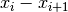

Rebin dialog.
Table of Contents
Rebins data with new X bin boundaries. For EventWorkspaces, you can very quickly rebin in-place by keeping the same output name and PreserveEvents=true.
| Name | Direction | Type | Default | Description |
|---|---|---|---|---|
| InputWorkspace | Input | MatrixWorkspace | Mandatory | Workspace containing the input data |
| OutputWorkspace | Output | MatrixWorkspace | Mandatory | The name to give the output workspace |
| Params | Input | dbl list | Mandatory | A comma separated list of first bin boundary, width, last bin boundary. Optionally this can be followed by a comma and more widths and last boundary pairs. Optionally this can also be a single number, which is the bin width. In this case, the boundary of binning will be determined by minimum and maximum TOF values among all events, or previous binning boundary, in case of event Workspace, or non-event Workspace, respectively. Negative width values indicate logarithmic binning. |
| PreserveEvents | Input | boolean | True | Keep the output workspace as an EventWorkspace, if the input has events. If the input and output EventWorkspace names are the same, only the X bins are set, which is very quick. If false, then the workspace gets converted to a Workspace2D histogram. |
| FullBinsOnly | Input | boolean | False | Omit the final bin if it’s width is smaller than the step size |
| IgnoreBinErrors | Input | boolean | False | Ignore errors related to zero/negative bin widths in input/output workspaces. When ignored, the signal and errors are set to zero |
The algorithm rebins data with new bin boundaries. The ‘params’ property
defines new boundaries in intervals . Positive
 make constant width bins, whilst negative ones
create logarithmic binning using the formula
make constant width bins, whilst negative ones
create logarithmic binning using the formula

This algorithms is useful both in data reduction, but also in remapping ragged workspace to a regular set of bin boundaries.
Unless the FullBinsOnly option is enabled, the bin immediately before
the specified boundaries  ,
,  , ...
, ...  is
likely to have a different width from its neighbours because there can
be no gaps between bins. Rebin ensures that any of these space filling
bins cannot be less than 25% or more than 125% of the width that was
specified.
is
likely to have a different width from its neighbours because there can
be no gaps between bins. Rebin ensures that any of these space filling
bins cannot be less than 25% or more than 125% of the width that was
specified.
If the input is an EventWorkspace and the “Preserve Events” property is True, the rebinning is performed in place, and only the X axes of the workspace are set. The actual Y histogram data will only be requested as needed, for example, when plotting or displaying the data.
If “Preserve Events” is false., then the output workspace will be created as a Workspace2D, with fixed histogram bins, and all Y data will be computed immediately. All event-specific data is lost at that point.
If the input workspace contains data points, rather than histograms, then Rebin will automatically use the ConvertToHistogram and ConvertToPointData algorithms before and after the rebinning has taken place.
If FullBinsOnly option is enabled, each range will only contain bins of the size equal to the step specified. In other words, the will be no space filling bins which are bigger or smaller than the other ones.
This, however, means that specified bin boundaries might get amended in the process of binning. For example, if rebin Param string is specified as “0, 2, 4.5, 3, 11” and FullBinsOnly is enabled, the following will happen:
Hence the actual Param string used is “0, 2, 4, 3, 10”.
Example - simple rebin of a histogram workspace:
# create histogram workspace
dataX = [0,1,2,3,4,5,6,7,8,9] # or use dataX=range(0,10)
dataY = [1,1,1,1,1,1,1,1,1] # or use dataY=[1]*9
ws = CreateWorkspace(dataX, dataY)
# rebin from min to max with size bin = 2
ws = Rebin(ws, 2)
print "The rebinned X values are: " + str(ws.readX(0))
print "The rebinned Y values are: " + str(ws.readY(0))
Output:
The rebinned X values are: [ 0. 2. 4. 6. 8. 9.]
The rebinned Y values are: [ 2. 2. 2. 2. 1.]
Example - logarithmic rebinning:
# create histogram workspace
dataX = [1,2,3,4,5,6,7,8,9,10] # or use dataX=range(1,11)
dataY = [1,2,3,4,5,6,7,8,9] # or use dataY=range(1,10)
ws = CreateWorkspace(dataX, dataY)
# rebin from min to max with logarithmic bins of 0.5
ws = Rebin(ws, -0.5)
print "The 2nd and 3rd rebinned X values are: " + str(ws.readX(0)[1:3])
Output:
The 2nd and 3rd rebinned X values are: [ 1.5 2.25]
Example - custom two regions rebinning:
# create histogram workspace
dataX = [0,1,2,3,4,5,6,7,8,9] # or use dataX=range(0,10)
dataY = [0,1,2,3,4,5,6,7,8] # or use dataY=range(0,9)
ws = CreateWorkspace(dataX, dataY)
# rebin from 0 to 3 in steps of 2 and from 3 to 9 in steps of 3
ws = Rebin(ws, "1,2,3,3,9")
print "The rebinned X values are: " + str(ws.readX(0))
Output:
The rebinned X values are: [ 1. 3. 6. 9.]
Example - use option FullBinsOnly:
# create histogram workspace
dataX = [0,1,2,3,4,5,6,7,8,9] # or use dataX=range(0,10)
dataY = [1,1,1,1,1,1,1,1,1] # or use dataY=[1]*9
ws = CreateWorkspace(dataX, dataY)
# rebin from min to max with size bin = 2
ws = Rebin(ws, 2, FullBinsOnly=True)
print "The rebinned X values are: " + str(ws.readX(0))
print "The rebinned Y values are: " + str(ws.readY(0))
Output:
The rebinned X values are: [ 0. 2. 4. 6. 8.]
The rebinned Y values are: [ 2. 2. 2. 2.]
Example - use option PreserveEvents:
# create some event workspace
ws = CreateSampleWorkspace(WorkspaceType="Event")
print "What type is the workspace before 1st rebin: " + ws.id()
# rebin from min to max with size bin = 2 preserving event workspace (default behaviour)
ws = Rebin(ws, 2)
print "What type is the workspace after 1st rebin: " + ws.id()
ws = Rebin(ws, 2, PreserveEvents=False)
print "What type is the workspace after 2nd rebin: " + ws.id()
# note you can also check the type of a workspace using: print isinstance(ws, IEventWorkspace)
Output:
What type is the workspace before 1st rebin: EventWorkspace
What type is the workspace after 1st rebin: EventWorkspace
What type is the workspace after 2nd rebin: Workspace2D
Categories: Algorithms | Transforms\Rebin